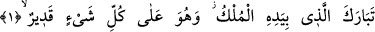
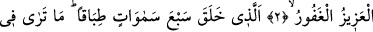
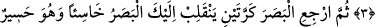
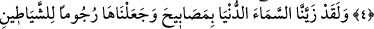
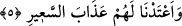

BİRBİRİ İLE ÂHENKTAR
YEDİ GÖĞÜ YARATANDIR
Bismillâhirrahmânirrahîm
1. Mutlak hükümranlık elinde olan Allah, yüceler yücesidir ve O’nun her şeye
gücü yeter.
2. O ki, hanginizin daha güzel davranacağını sınamak için ölümü ve hayatı
yaratmıştır. O, mutlak gâliptir, çok bağışlayıcıdır.
3. O ki, birbiri ile âhenktar yedi göğü yaratmıştır. Rahmân olan Allah’ın
yaratışında hiçbir uygunsuzluk göremezsin. Gözünü çevir de bir bak, bir bozukluk
görebiliyor musun?
4. Sonra gözünü, tekrar tekrar çevir bak; göz (aradığı bozukluğu bulmaktan)
âciz ve bitkin hâlde sana dönecektir.
5. Andolsun ki biz, (dünyaya) en yakın olan göğü kandillerle donattık. Bunları
şeytanlara atış taneleri yaptık ve onlara alevli ateş azâbını hazırladık.
“Mutlak hükümranlık elinde olan Allah, yüceler yücesidir.” Arapçada “bereket”
ister akli, ister maddî olsun nemâ yâni artma demektir. Bereketin Allah Teâlâ’ya nispet
edilmesi O’nun zâtında, sıfatlarında ve fiillerinde kendisinin dışındaki her şeyden yüce
olmasından dolayıdır. Bir başka ifâdeyle bereket ziyâde ve fazlalık mânâsını ihtivâ
etmektedir. Ziyâde ve fazla olmak da başkasından yüce ve üstün olmayı gerektirir.
Nitekim “Onun benzeri hiçbir şey yoktur” (eş-Şûra,, 42/11) âyet-i kerîmesi de buna
işâret etmektedir. Onun benzeri hiçbir şey yoktur demek vâcibu’l-vucud olduğu için